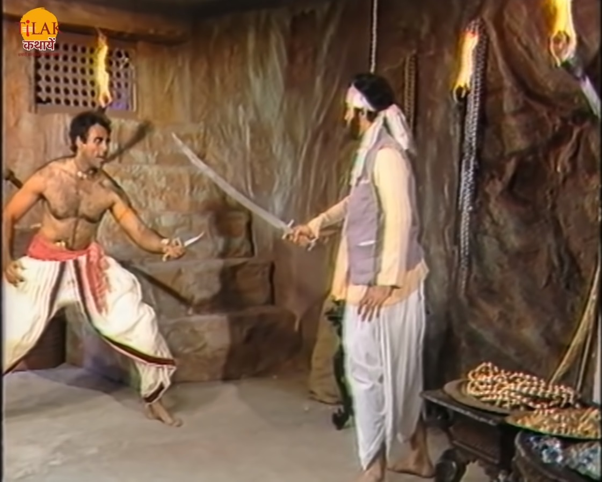
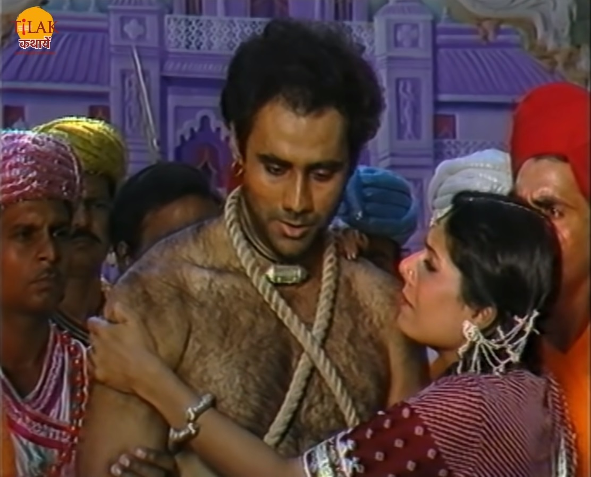

|  | बेताल को विक्रम फिर से पकड़ लेता है और अपने कंधे पर डाल कर ले चलता है। बेताल फिर से विक्रम को एक कहानी सुनता है। राजा विरकेतु के राज्य में एक चोर चोरी करता था लेकिन कभी पकड़ा नहीं जाता था। राज ऐस बात को लेकर बहुत चिंतित रहता था। राजा अपने सैनिकों पर क्रोधित होता है की व्यापारियों का इतना नुक़सान हो रहा है। व्यापारी राज अंकों कहते हैं की यादि ऐसे ही चलता रहा तो उन्हें मजबूरन ये नगर छोड़कर निकलना होगा। राजा स्वयं चोर को पकड़ने की ज़िम्मेदारी लेता है। उस चोर को एक लड़की मिलती है उसका नाम मनु था जो एक रतनसैन व्यापारी की बेटी थी दोनो में बातचीत होती है और दोनों एक दूसरे को पसंद करने लगते हैं। चोर को उस लड़की से प्रेम हो जाता है और वो चोर से मिलने का वादा करके वहाँ से चल जाती है। रात्रि में राजा स्वयं गश्त पर निकल जाता है। राजा को चोर मिल जाता है चोर राजा को भी चोर समझ कर अपना साथी बना लेता है। राजा और चोर दोनों चोरी करने के लिए निकल पड़ते हैं। चोरी रि करने के बाद राजा को चोर अपने साथ उस लड़की के घर ले जाता है जिसे वो दिन में मिला था। चोर राजा को उस लड़की मनु के बारे में बताता है और कहता है की उसे चोर नहीं बनाना था, वो राजा के दरबार में बहुत बार सैनिक बनाने के लिए गया लेकिन राजा के सैनिकों ने उसे कभी राजा से मिलने ही नहीं दिया जिसके कारण उसे चोर बनाना पड़ा। चोर राजा को अपने ठिकाने पर ले जाता है और चोरी का सारा समान दिखता है। |
| राजा चोरी का समान देख कर चोर को अपनी असलियत बता देता है और उसे पकड़ कर कारगर में डालने की बात करता है। दोनों में लड़ाई शुरू हो जाती है। राजा चोर को पकड़ लेता है और बंदी बना कर अपने साथ ले जाता है। रतनसैन व्यापारी की बेटी मनु अपने पिता को चोर के बारे में बताती है की तभी राजा ने चोर पकड़ लिया यह सुन दोनों घर के बाहर आते हैं। मनु चोर को बंदी बना देख दूख़ी हो जाती है वह अपने पिता को कहती है की वो चोर को सजा मिलने से बचा ले। राजा चोर को सजा देने के लिए अपने दरबार में ले जाता है और उसे प्राण दंड देने की बात करता है तो चोर राजा को कहता है की तुम मेरे मित्र बने थे बेशक थोड़े समय के ही लिए, मैं सिर्फ़ आपसे ये परार्थना करता हूँ की जिन परिस्थित के कारण में चोर बना आप उन्हें भी उचित दंड दीजिए। राजा उसकी बात सुनकर उस पर गोर करने की बात कह कर उसे सजा के लिए भेजने ही वाला था की तभी वहाँ रतनसैन आ जाता है और राजा से चोर को प्राण दंड ना देने की गुहार लगता है और उसे आर्थिक दंड की सजा देने के लिए कहता है। |  |
चोर यह सुनकर पहले रोने लगता है और थोड़ी देर के बाद हंसने लगता है। राजा रतनसैन को इसका कारण पूछता है तो रतनसैन उसे बताता है की उसक्क बेटी मनु को इस चोर से प्रेम हो गया है और वो उसके बिना ज़िंदा नहीं रह सकती इसलिए आप चोर को प्राण दंड ना दे। राजा रतनसैन की बात सुनकर कहता है की उन्होंने चोर को सजा सुना दी है और वो किसी भी निजी भावना से मृत्यु दंड की भावना नहीं बदल सकते। तभी मनु वहाँ आ जाती है और राजा से प्रार्थना करती है की वो उस चोर की मृत्यु से पहले उस से शादी करना चाहती हूँ ताकि सारी उमर में उसकी विधवा बानकर जीवन बिता सकूँ। राजा मनु के चोर के प्रति प्रेम को देख कर अपना फ़ैसला बदल देते हैं और चोर की सजा माफ़ कर देते हैं। राज चोर की कहता है की तुम वीर हो गनी हो इसलिए हम तुम्हें इस राज्य का सेनापति बना देते हैं। बेताल राजा विक्रम से पूछता है की अब ये बता की इस काहनी में जब व्यापारी ने चोर की सजा माफ़ करने के लिए कहा तब चोर पहले किस बात पर रोया और बाद में वो किस बात पर हंसा। राजा विक्रम बताता है की चोर पहले इसलिए रोया की जो व्यक्ति मेरे प्राण बचना चाहता है मैं उसके इस उपकार का बदला नहीं उतार पाया क्योंकि वो सजा में मारने वाला था। और बाद में हंसा इसलिए की उस व्यापारी की इतनी सुंदर लड़की को पसंद आया भी तो एक चोर। यह सुनकर बेताल विक्रम को कहता है की तुमने उत्तर तो बिल्कुल सही दिया लेकिन तुम मेरी शर्त भूल गए की तुम बोले तो मैं चल जाऊँगा। यह कर कर बेताल फिर से उसी पेड़ पर चला जाता है।
| Previous Story | Home | Next Story |